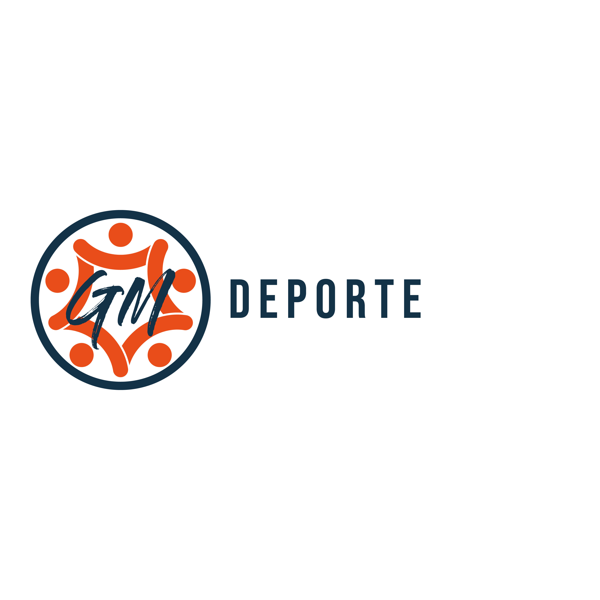

Sobre el Proyecto Monte Mitre
Iniciativa para la salud y la comunidad
El presente proyecto, elaborado por los estudiantes de Educación Física Chazarreta Alan, Haure Milena y Ramírez Sergio, propone la creación y puesta en valor del Sendero “Monte Mitre”, un espacio natural destinado a la comunidad de Guardia Mitre.
Esta iniciativa surge como una propuesta orientada a promover la actividad física, el contacto con la naturaleza y el fortalecimiento del sentido de pertenencia comunitaria, a través de la creación de un sendero accesible, seguro y desafiante.
Esta iniciativa, orientada a promover la actividad física y el contacto con la naturaleza, cuenta con el impulso y respaldo del Área de Deportes de la Municipalidad, bajo la gestión de su director, el Profesor Denis Evans.
Alan Chazarreta
Ed. Física
Milena Haure
Ed. Física
Sergio Ramírez
Ed. Física
Instituciones que impulsan el proyecto
Municipalidad de
Guardia Mitre

Área de Deporte
Prof. Denis Evans